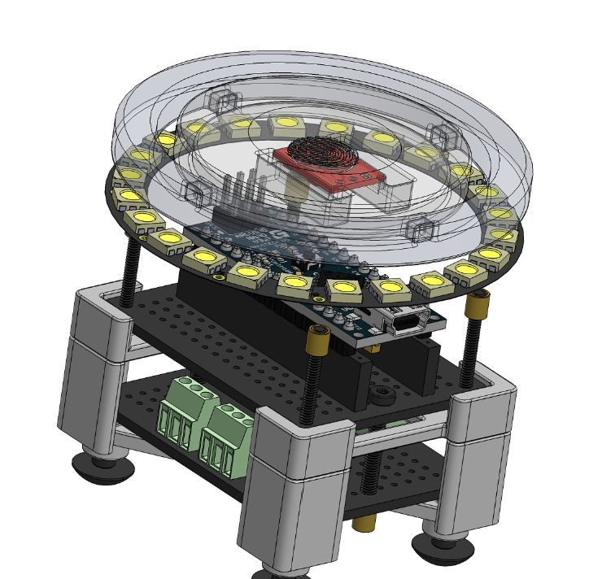
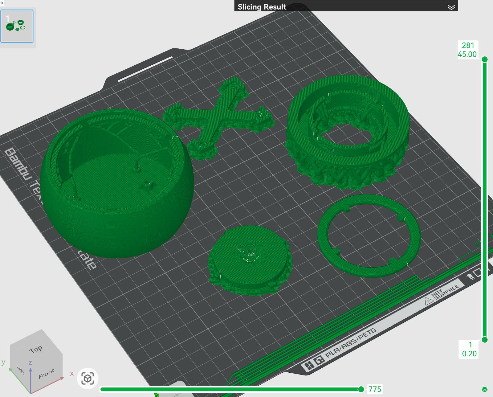

The story
The idea hit me at the end of finals week in December 2025. After two and a half years of college, I wanted one project that was entirely my own, not tied to a club, a class, or a team, where I owned every decision from end to end and poured everything I had been accumulating into something of my own design. Winter break was the window, and I gave myself a single rule: take a product from a thought in my head to a finished, working object before the next semester started, at my own pace and to my own standard.
So I claimed my Invention Studio privileges and a lot of late nights in the makerspace, and built Focus Puck, a single-purpose desk timer for focused work. One object, one job, designed to be something I would actually want to reach for.
The objectives I set myself: a compact, desk-friendly timer built for flexible iteration and intuitive assembly; a purpose-built enclosure that packaged the Arduino, sensors, and perfboard with defined mounting and clean cable routing; and DFMA features throughout so I could print and iterate fast.
How it feels to use
A focus timer only works if reaching for it never becomes its own distraction, so the whole interaction lives in one spot. Engraved into the center cap, directly in line with a capacitive touch sensor underneath, is a fingerprint pattern. You don't need instructions to know that is where you touch it.
A single tap wakes the device, and the LED ring glows a soft, solid white. To set your time, you tap and hold the center: the ring fills as you hold, each light adding two minutes, until you let go. Then a double tap starts the countdown, and the ring slowly empties as the minutes tick down. When time is up, it flashes three times to let you know. Fifteen seconds of stillness later, the light fades out and the puck waits, quiet, for the next touch.
One point of contact, three simple gestures, and a ring of light that tells you everything. No screen, no menus, nothing to pull you out of the work you sat down to do.

Designing around the electronics
The hard part of a device this small isn't the shell, it's everything inside it. I designed the internals as a modular stack of trays so the electronics stayed rigid and, just as importantly, stayed serviceable.
A bottom tray carries the perfboard and screw terminals, the layer where accessories connect, fully isolated from the board above. A top tray interlocks with it and holds the Arduino Nano on headers, so the brain of the device lifts out in seconds if it ever needs work. The pair locates on four bosses in the base of the shell. Above the electronics sits the lighting: an LED ring pressed into its own tray, with a diffuser that drops onto a ledge and twist-locks down on dovetail joints, no fasteners, just a quarter turn. That tray seats into the top of the shell on four notches and holds by a tuned interference fit.
The fasteners themselves are hidden. Heat-set inserts and a few screws tie the stack to the shell, and on the underside the screw entries disappear under counterbored rubber feet that sit perfectly flush. From the outside it reads as one clean object; open it up and every part has a reason and a way out.

Designing for the printer, not against it
Rather than design a part and then wrestle it onto the bed, I let the manufacturing method shape the geometry from the start. DFMA features cut support material, improved print reliability, and simplified assembly, so every iteration came off cleaner and went together faster. I split the work across two machines on purpose: the Bambu X1E for fast, cheap iteration, and the Formlabs Form 4 where surface finish and final fit mattered.


Proving it out
I ran ANSYS FEA on the shell for stiffness and the load cases that mattered, then backed it with physical drop tests, since a desk object gets knocked around and I wanted its failure modes to be ones I had chosen. The most useful thing the drop tests taught me wasn't structural, though; it was cosmetic. A fall the part shrugged off mechanically could still scuff the finish, and a product that looks beat-up after one tumble doesn't feel premium. That reframed how I think about material and finish for the next version, the way brushed aluminum, for instance, hides the small scratches a smooth gloss would show.
Outcome
A modular, DFMA-optimized enclosure that's quick to iterate and quick to service; a repeatable manufacturing workflow (X1E for speed, Form 4 for final-fit aesthetics, with post-processing to reach the finish I wanted); and a device that assembles, start to finish, in under two minutes.
What's next
If I take it further: add a buzzer so the timer has a voice and not just a light; add a battery tray to cut the cord and make it truly wireless; and, the part I'm most interested in, redesign it for mass manufacturing instead of rapid prototyping. That means designing in draft angles, ribs, uniform wall thickness, parting lines, and ejection: building the same product for an injection-molding tool instead of a print bed.